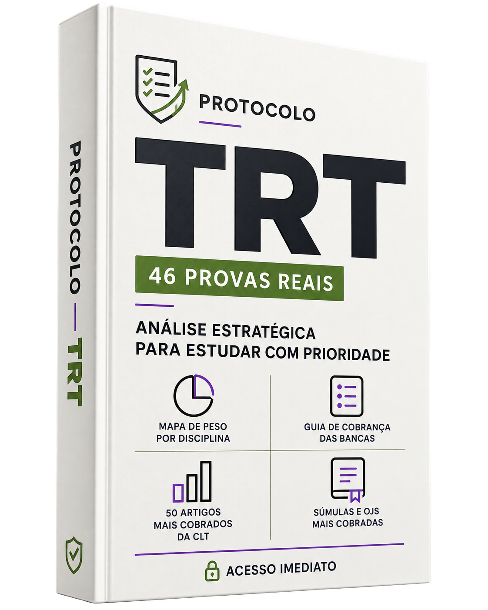

Análise Estratégica do Ciclo TRT
Comece entendendo o cenário das provas, as bancas recorrentes e os critérios usados para definir prioridades. Em vez de abrir materiais aleatoriamente, você parte de uma visão organizada da preparação.
PARE DE ESTUDAR NO IMPROVISO
Transforme o edital de Analista Judiciário em um plano executável de 8 semanas. Organize prioridades, adapte o ciclo à banca e saiba o que estudar, revisar e testar em cada etapa — sem trocar de estratégia toda semana.
▣ Pagamento único • acesso imediato • garantia de 7 dias
O método na prática
Cinco materiais integrados para definir prioridades, montar seu ciclo, acompanhar o que foi executado e ajustar a preparação ao longo de 8 semanas.
Comece entendendo o cenário das provas, as bancas recorrentes e os critérios usados para definir prioridades. Em vez de abrir materiais aleatoriamente, você parte de uma visão organizada da preparação.
Transforme seu edital em um plano de 8 semanas. A planilha reúne diagnóstico, pesos por disciplina, ciclo diário, revisões, caderno de erros, simulados e dashboard para acompanhar o que realmente foi executado.
Entenda como FCC, CEBRASPE e FGV estruturam suas cobranças e ajuste a forma de estudar, resolver questões e revisar. O guia ajuda você a adaptar a estratégia quando a banca for definida.
Revise 50 dispositivos selecionados da CLT com tema e pontos de atenção já identificados. É uma curadoria didática para orientar sua revisão, não um ranking estatístico ou garantia de cobrança na prova.
Consulte a jurisprudência trabalhista organizada por tema, com explicações objetivas e alertas de alteração. As fontes oficiais indicadas permitem conferir o conteúdo vigente antes da prova.
Recursos complementares
Além dos cinco materiais principais, você recebe três recursos para aplicar o conteúdo, medir seu desempenho e orientar as próximas semanas.
Encontre provas por TRT, ano, banca e cargo sem depender de buscas desorganizadas. Você recebe atalhos para as fontes indicadas e um manifesto de conferência; os arquivos não são redistribuídos dentro do produto.
Teste seus conhecimentos, identifique lacunas e transforme os erros em ações de revisão. O simulado reúne 60 questões autorais com gabarito comentado para alimentar o painel de estudos.
Use um prompt estruturado no ChatGPT para criar exercícios adicionais e revisar respostas. Como todo conteúdo gerado por inteligência artificial, as questões devem ser conferidas antes de entrarem no seu ciclo.
A diferença está na execução

Comece sem esperar
Após a confirmação do pagamento, você recebe no e-mail as instruções para acessar os materiais. Abra o painel, ajuste as prioridades ao seu edital e monte sua primeira semana de execução.
Seu plano começa hoje
PAGAMENTO ÚNICO. SEM MENSALIDADE:
Pagamento único de apenas▣ Pagamento seguro • sem recorrência
Dúvidas
Respostas objetivas para você entender exatamente o que recebe e como usar.
O Eixo TRT foi estruturado para candidatos a Analista Judiciário. Como disciplinas, pesos e especialidades mudam entre editais, o painel deve ser configurado com base no edital do cargo que você pretende disputar.
O plano pode ser adaptado ao TRT do seu interesse. A biblioteca reúne acessos relacionados a 23 TRTs, mas o edital mais recente do concurso escolhido continua sendo sua referência principal.
Você pode começar pela base comum e usar o painel para organizar as disciplinas já previstas. Quando a banca for confirmada, consulte o guia da FCC, CEBRASPE ou FGV e ajuste sua forma de resolver questões e revisar.
Não é cursinho nem assinatura. É um pacote de materiais digitais com painel configurável, guias, simulado e recursos de apoio. O pagamento é único: R$27,90, sem mensalidade.
Após a confirmação do pagamento, as instruções de acesso são enviadas para o e-mail informado na compra. Comece pelo diagnóstico, configure o painel conforme seu edital e monte a primeira semana do plano.